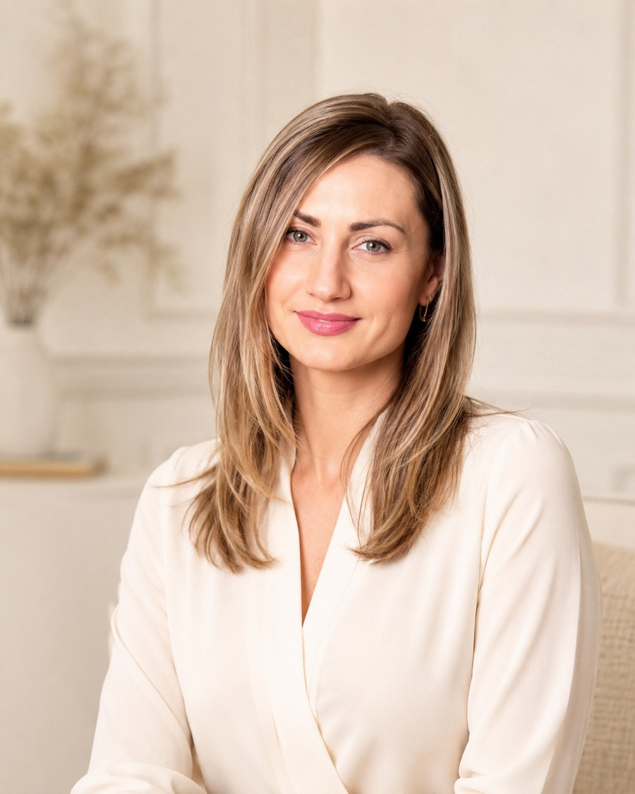

Сильный стресс и внутреннее напряжение
магистр
психологии
практика
с 2016 года
50
минут
600
грн
русский
и украинский
онлайн
очно по предварительному
согласованию
Когда стоит обратиться
Когда может быть нужна поддержка
Не обязательно ждать момента, когда справляться самостоятельно уже невозможно. Обращение может быть способом внимательнее отнестись к своему состоянию.
Кризис или ощущение потери опоры
Эмоциональное истощение и переутомление
Сложные жизненные перемены и переезд
Тревога, неуверенность и самокритика
Напряжение в отношениях и семье
Последствия тяжёлого опыта
Потребность лучше понять себя и свой запрос
Направления работы
С чем можно обратиться
Запрос может быть сформулирован нечётко. На первой встрече можно вместе определить, что сейчас требует наибольшего внимания.
Война и вынужденное перемещение
Психологическая поддержка людей, пострадавших от войны, включая внутренне перемещённых лиц, во время адаптации, потери привычной опоры и длительной неопределённости.
Острый и хронический стресс
Длительное напряжение, истощение, перегрузка, трудности с восстановлением и потребность стабилизировать состояние.
Панические атаки и их последствия
Страх повторения приступа, телесная тревога, избегание ситуаций и постепенное возвращение чувства безопасности.
Тревожные состояния
Постоянное беспокойство, напряжение, трудности со сном и психологическая поддержка при диагностированных тревожных расстройствах.
Травматический опыт и симптомы ПТСР
Навязчивые воспоминания, избегание, повышенная настороженность и другие последствия травматических событий — без самодиагностики и обещаний результата.
Навязчивые мысли и проявления ОКР
Повторяющиеся тревожные мысли, ритуалы и действия, которые отнимают время, усиливают напряжение или осложняют повседневную жизнь.
Домашнее насилие
Психологическая поддержка, восстановление чувства опоры, работа с последствиями контроля, унижения, угроз или другого насилия.
Кризисы, отношения и семья
Потери, расставания, конфликты, повторяющиеся сценарии, семейные обращения и сложные жизненные перемены.
Материнство без партнёрской поддержки
Психологическая поддержка матерей, которые воспитывают детей самостоятельно и переживают истощение, одиночество, перегрузку или сложные жизненные изменения.
Люди старшего возраста
Поддержка во время утрат, одиночества, изменений здоровья, семейных ролей, привычного образа жизни или ощущения собственной опоры.
Об Алине и её подходе
Бережное присутствие и уважение к вашему темпу

Я — Алина Горб, психолог и магистр психологии. Практикую с 2016 года. Работаю с людьми разного возраста, парами и семьями; формат работы с несовершеннолетними согласуется отдельно.
Первый контакт для меня — это внимательный разговор без требования сразу сформулировать «правильный» запрос. Я слушаю, уточняю контекст и предлагаю двигаться в темпе, который остаётся посильным.
Профессиональные границы и честность о возможностях консультации — часть моей работы. Если запрос выходит за пределы компетенции, я объясню это и порекомендую обратиться к соответствующему специалисту.
Подход в работе
Клиент-центрированный подход
В работе я опираюсь на уважение к опыту человека, его темпу, личным границам и праву самостоятельно определять важные для себя изменения.
Гештальт-инструменты и метафорические карты
В зависимости от запроса я могу использовать отдельные инструменты гештальт-подхода и метафорические ассоциативные карты. Они помогают находить слова для переживаний, замечать внутренние реакции и рассматривать ситуацию с разных сторон. Метафорические карты не являются диагностическим тестом и используются только с согласия клиента.
Вера, ценности и поиск смысла
Если человеку важны вопросы веры, духовного опыта, смысла жизни или личных ценностей, эти темы также могут быть включены в консультацию — без навязывания религиозных взглядов и с уважением к мировоззрению клиента.
Для меня настоящая сила — не в том, чтобы всегда преодолевать трудности в одиночку. Иногда она начинается с честного признания: мне тяжело, мне нужна опора. Вера, близкие люди и бережное отношение к себе могут помочь постепенно восстанавливать внутреннюю целостность и находить собственный путь дальше.

Образование и диплом
Профессиональная основа
Алина Горб
Магистр психологии
Днепровский национальный университет имени Олеся Гончара
2024
Первый контакт
Как проходит консультация
- 01
Первое обращение
Напишите коротко через форму, в Telegram или на email.
- 02
Согласование
Договоримся об удобном времени, языке и формате встречи.
- 03
Консультация
Встреча длится 50 минут. Основной формат — онлайн; очно — по предварительному согласованию.
- 04
Следующие шаги
Дальнейшая работа и темп определяются вместе в соответствии с запросом.
Опора в работе
Принципы и профессиональные границы
Психологическая консультация не заменяет экстренную, медицинскую или психиатрическую помощь. В кризисной ситуации обращайтесь в местные экстренные службы.
- КонфиденциальностьБережное отношение к приватности и личной информации.
- УважениеБез оценки, давления и навязывания готовых решений.
- Границы компетенцииЧестное обсуждение формата и перенаправление, когда нужен другой специалист.
- Без гарантийРезультат зависит от многих факторов и не может быть обещан заранее.
Важные детали
Частые вопросы
Какова стоимость и длительность консультации?
Консультация длится 50 минут и стоит 600 грн.
На каких языках проходят встречи?
На русском или украинском — выберите комфортный язык в форме.
Можно ли обратиться из другой страны?
Возможность онлайн-консультации и организационные детали уточняются при первом обращении.
Возможны ли очные консультации?
Да, только по предварительному согласованию. Адрес публично не размещается.
Как подготовиться к первой встрече?
Специальная подготовка не нужна. Достаточно коротко описать, что сейчас беспокоит больше всего.
Можно ли обратиться с семейным запросом?
Да. Формат и состав участников стоит предварительно обсудить в первом сообщении.
Первый шаг
Контакты и запись
Одна короткая форма поможет согласовать удобный способ связи, язык и формат консультации.
- Telegram@alina_horb1991
- Instagram@ng_alina_dp
- Emailhello@alinahorb.com
- Что будет дальшеАлина ответит, уточнит организационные детали и предложит доступное время.
Не отправляйте в первом сообщении медицинские документы, кризисные подробности или другие чувствительные данные.